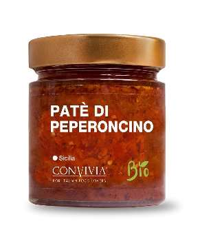
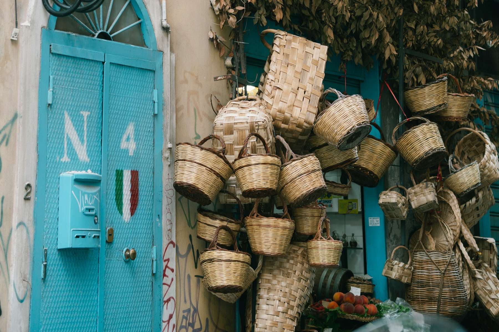
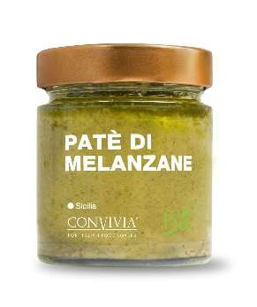
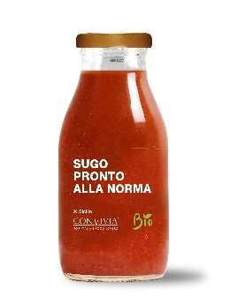
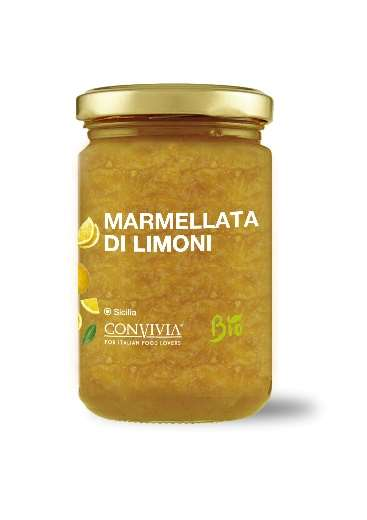
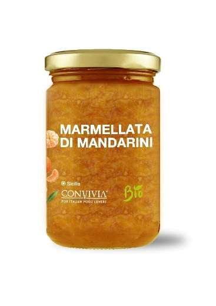

Die Zusammenstellung jedes Korbes richtet sich nach dem Temperament der beschenkten
Person. Die Abbildungen sind Beispiele. Den persönlich zugeschnittenen Korb
erstellt unser Temperament-Kalkulator.

Sizilianischer Feuerkorb
9 / 11 / 19 Produkte · 49 / 59 / 109 € · inkl. Urkunde
Heiß und trocken — Tomate, Peperoncino, Kapern und Blutorange.



z. B. mit diesen Delikatessen

Sizilianischer Wasserkorb
9 / 11 / 19 Produkte · 49 / 59 / 109 € · inkl. Urkunde
Kalt und feucht — Aubergine, Sugo alla Norma und milde Cremes.




z. B. mit diesen Delikatessen

Sizilianischer Luftkorb
9 / 11 / 19 Produkte · 49 / 59 / 109 € · inkl. Urkunde
Heiß und feucht — Basilikum, Fenchel, Mandel, Pistazie und Feige.


z. B. mit diesen Delikatessen

Sizilianischer Erdkorb
9 / 11 / 19 Produkte · 49 / 59 / 109 € · inkl. Urkunde
Kalt und trocken — Zitrone, Mandarine und dunkle Auberginenpaste.



z. B. mit diesen Delikatessen

Dein persönlicher Korb
Dieselben drei Größen — Du wählst die Produkte
Stell Dir Deinen Korb selbst aus allen Delikatessen des Sortiments zusammen.
Vier Körbe nach den vier Elementen — Feuer, Wasser, Luft und Erde —, jeder in den
Größen Klein, Medium und Large, dazu der fünfte ganz nach Deinem eigenen Geschmack.
Alle enthalten biologische Delikatessen aus Sizilien und die gedruckte Temperament-Urkunde.
Für den persönlich zugeschnittenen Korb nutze den
Temperament-Kalkulator.

Handgeflochtene Körbe aus Sizilien
Warenkorb
Unser Webshop ist bald bereit — die Bestellfunktion ist noch im Aufbau.
In den Korb gelegt